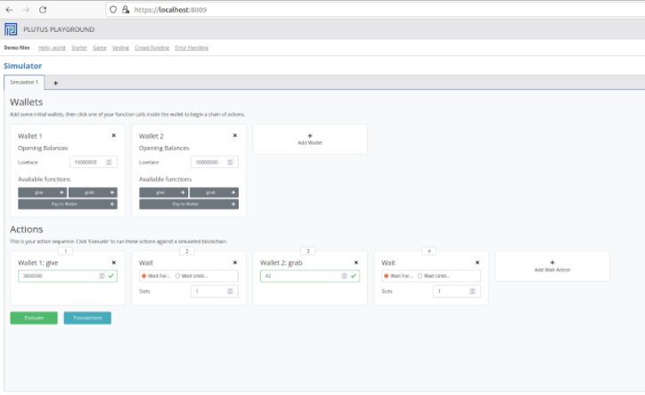

1. Semaine 02 - Validation¶
Note
Ceci est une version écrite de Lecture #2, Iteration #3.
Nous aborderons les scripts de Validation non typés de bas et haut niveau ainsi que les scripts de validation typés On-Chain.
Afin de simplifier la compréhension nous utiliserons parfois des termes anglais non traduit en Français.
Comme par exemple Datum, Redeemer ou Script Context que nous abrégerons en Context.
Le code utilisé dans cette lecture utilise le commit 6aff97d596ac9d59460aab5c65627b1c8c0a1528
1.1. Introduction¶
Pensez à mettre à jour la version de Plutus Playground. Et à récupérer le bon identifiant de commit.
1.2. Lecture 2¶
1.2.1. Objectifs¶
Les principaux objectifs de la semaine 2 sont :
Comprendre de simples scripts
validatornon typés (Bas niveau) dans un premier temps et typés (Haut niveau) dans un second..
Nous utiliserons principalement dans ce cours les scripts
validatortypés.Certains projets qui ont essayé de construire quelque chose sur Cardano avec Plutus n’ont pas choisi d’utiliser les types
datade Haskell pour structurer les données personnalisés et typer levalidator, mais ont plutôt travaillé directement avec lesvalidatorsnon typés de bas niveau pour des raisons de performances.
Le script compilé
Plutus Coredevient plus volumineux quand les types de données de haut niveau sont utilisés dans le code et le nombre d’étapes nécessaire pour exécuter le scriptvalidatoret la consommation de la mémoire augmentent. Si les ressources matérielles sont limités, vous préférerez surement utiliser la version « Bas niveau ».Il est possible d’estimer le coût d’un script de smart contrat : voir cet article en anglais
Construire un Script
validatorqui réussit toujours, en ignorant complétement ses arguments :Datum,Redeemeret leScript Context.Construire un Script
validatorqui échoue toujours , en ignorant complétement ses arguments :Datum,Redeemeret leScript Context.Construire un Script
validatorqui consulte leredeemeret vérifie s’il contient une certaine valeur prédéfinie (un entier, d’une valeur fixée à 42 dans notre cas).Réécrire ce script dans une version typée, qui sera la seule utilisée en pratique.
Dans un premier temps avec des types préconstruits au langage (
built-in data types).Nous avons vu comment nous pouvons également utiliser des types de données personnalisés, mais nous n’avons pas examiné les exemples où le
Datumou leContextest réellement inspecté, ce qui, bien sûr, dans des exemples réalistes sera le plus souvent le cas. Nous le ferons dans les prochains cours.
1.2.2. Concepts clés¶
Modèle étendu UTxO - Plutus Validator (Les smart contract de Cardano) - Datum - Redeemer - Script context - les types de données de bas et haut niveau.
Note
Références à lire, en anglais pour les sections 1.2.X :
1.2.2.1. Extended UtxO (eUTxO): datum, redeemer et script context¶
Un nouveau type d’adresse a été introduit dans le modèle étendu eUtxO.
Dans le modèle simple UtxO, nous utilisons des adresses de clef publique. Cette adresse est donnée par le hachage d’une clé publique et si un UtxO se trouve à cette adresse, alors une transaction peut utiliser cet UtxO comme entrée si la signature de la clé publique est incluse dans la transaction.
Le modèle (e)UtxO étend cela en ajoutant un nouveau type d’adresse, appelée adresse de script,qui peut exécuter une logique arbitraire.
Lorsqu’une transaction qui souhaite consommer un UTxO associé à une adresse de script est validée par un nœud alors ce nœud exécute le script, puis, en fonction du résultat du script, décide si la transaction est valide ou non.
Il y a eu deux autres ajouts au modèle de base.
Le premier étant que maintenant, au lieu d’avoir simplement des signatures et des transactions,
nous avons des Redeemers qui sont des morceaux de données arbitraires.
Du côté de l” UTxO, du côte de la sortie, nous avons une donnée arbitraire supplémentaire appelée Datum, que nous pouvons considérer comme un petit morceau d’état.
Enfin, nous avons le contexte du script et il existe différents choix de définition. Il pourrait être très restreint, composé uniquement du Redeemer ou il pourrait être très global composé de l’ensemble de l’état de la blockchain. À Cardano, c’est la transaction qui est validée, y compris toutes ses entrées et sorties.
- Il y a donc trois éléments de données qu’un script Plutus obtient :
Le
Datumsiégeant dans l’UTxO,Le
Redeemervenant de de l’entrée,Le
script de validationet lecontexteconstitué de la transaction en cours de validation et de ses entrées et sorties.
Ainsi, dans une implémentation concrète comme Plutus, ces trois données doivent évidemment être représentées par un type de données concret, un type de données Haskell.
1.2.2.2. Smart Contracts Plutus appelés Scripts Validateurs¶
Les contrats intelligents sur Cardano fonctionnent différemment des contrats intelligents sur Ethereum. Les contrats intelligents Plutus ne sont pas des scripts déployés sur la blockchain Cardano, avec des méthodes que les utilisateurs peuvent exécuter.
Les contrats intelligents Plutus sont des validateurs, par ex. des fonctions qui évaluent des données et retournent un booléen. Les contrats intelligents peuvent soit dire « oui » les transactions doivent réussir, soit « non » elles ne doivent pas.
Lorsque les contrats intelligents Plutus sont compilés, une sortie binaire(logique) Plutus Core est produite.
Cette sortie binaire peut être hachée pour produire une « adresse de script ». Les adresses de script sont de nouveaux types d’adresses de blockchain. Contrairement aux adresses de portefeuille typiques, elles n’ont pas de paire de clés associée. Il n’y a pas de clé de vérification ni de clé de signature par contre comme les adresses de portefeuille ordinaires, elles possèdent des UTxOs.
Il est important de souligner que les contrats intelligents sont limités. Ils peuvent approuver ou refuser des transactions mais ils ne peuvent pas créer de nouvelles transactions. Ils peuvent simplement renvoyer
trueoufalse.La majeure partie du « travail » doit se produire « off-chain ».
Les validateurs Plutus sont des fonctions qui ont trois entrées et renvoient un
booléen. Les trois entrées sont leDATUM, leREDEEMERet leCONTEXTE DU SCRIPT.La signature de la fonction :
validator :: Datum -> Redeemer -> ScriptCxt -> Bool
Le contexte du script est le plus facile à comprendre. Les contrats intelligents sont exécutés implicitement lorsque les UTxO aux adresses de script sont utilisés comme entrées dans une transaction. Le contexte du script fournit des informations sur la transaction en attente, ainsi que sur l’entrée qui a déclenché la validation.
Il existe deux types d’utilisateurs dans un enchainement Plutus. L’utilisateur qui crée la première transaction est appelé le locker. L’utilisateur qui crée la seconde transaction est appelé le unlocker. Le
Datumest l’entrée du Locker. LeRedeemerest l’entrée du Unlocker.Grâce à ces noms différents, nous obtenons une idée un peu plus claire du fonctionnement des validateurs :
validator :: LockerInput -> UnlockerInput -> ScriptCxt -> Bool
Comprendre que le
Datumsoit l’entrée du Locker et que leRedeemersoit l’entrée du Unlocker est très utile lors de la conception de validateurs. Cependant, ce n’est pas ainsi que les transactions Plutus sont réellement construites. En réalité, le Locker envoie un hachage duDatumlors du verrouillage des actifs à une adresse de script. Le Unlocker doit envoyer leRedeemeret leDatumcomplet, de sorte qu’elle corresponde au hachage que le Locker a utilisé lors du verrouillage des actifs.Ainsi, le Unlocker doit envoyer les deux entrées, l’entrée du Locker et la sienne. Étant donné que le Locker a défini le hachage lors du verrouillage, le Unlocker n’est pas en mesure d’envoyer des
Datums. Ce doit être leDatumchoisie par le Locker. Cependant, il n’y a pas de mécanisme On-Chain pour propager le choix des Lockers au validateur. Le Unlocker doit découvrir par le biais d’un processus Off-Chain personnalisé quelDatumle Locker a utilisée, sinon le déverrouillage est impossible.
Pour imaginer comment ces entrées sont utilisées, considérons une situation d’échange(swap).
Le Locker verrouille les actifs à une adresse de script et fournit un Datum qui décrit comment ils aimeraient être payés.
Ensuite, le Unlocker utilise l’UTxO comme entrée et transmet un Redeemer expliquant comment il souhaite payer.
Le validateur examine les entrées des deux utilisateurs et le contexte du script pour s’assurer que les entrées et les sorties soient cohérentes avec ce qui est demandé par les utilisateurs.
Si c’est le cas, il renvoie true et effectue l’échange. Sinon false, la transaction échoue.
1.2.2.3. Synthèse¶
Les contrats intelligents Plutus sont hachés pour créer une adresse de script.
Les actifs sont envoyés à l’adresse du contrat intelligent et y sont verrouillés.
Les actifs doivent passer le validateur Plutus pour quitter l’adresse du script et être déverrouillés.
Il y a trois éléments d’entrée dans un validateur Plutus :
datum,redeemeretcontexte de script.Le
datumest l’entrée du Locker, leRedeemerest l’entrée du Unlocker.Le Locker envoie un hachage du
Datumlors du verrouillage.Le Unlocker doit être informé du
Datumque le Locker a utilisée pour faire le hachage.Le Unlocker doit envoyer le
Datumcorrespondant au hash et à l’éventuelRedeemerlors du déverrouillage.
1.3. Lecture 2/week 2¶
Comme expliqué précédement, l’exécution de l’instance locale de Plutus playground pour compiler le code, simuler et tester certaines conditions suit le même processus que les semaines précédentes.
Ceci est également valable pour vérifier la bonne version git de plutus-apps et rien de tout cela ne sera répété ici.
Les validateurs Plutus sont des fonctions qui ont trois entrées et renvoient un booléen. Les trois entrées sont le Datum, le Redeemer et le Script Context.
validator :: Datum -> Redeemer -> ScriptContext -> Bool
Le Datum provient de la sortie consommée.
Le Redeemer vient de l’input qui consomme. Et le contexte est la transaction consommatrice avec toutes ses entrées et sorties.
Les trois types datum, Redeemer et contexte sont représentés par le type de données data intégré que nous venons d’examiner.
Ce serait donc une fonction qui prend trois arguments, tous de type données intégrées(builtin).
Et il se trouve que le premier est le Datum, le second est le Redeemer et le troisième est le contexte.
Alors maintenant, quel est le type de retour ? Et c’est un peu surprenant, c’est le type Unit..
Dans les exemples typés et non typés, nous écrirons un script de validation simple avec les variantes suivantes :
untyped(non typé) : variante 1 (adresse « cadeau » : envoyez y des ADA et tout le monde pourra les prendre)
Un validateur qui réussit toujours, ignorant complètement ses arguments :
Datum,RedeemeretScript Context.mkValidator :: BuiltinData -> BuiltinData -> BuiltinData -> () mkValidator _ _ _ = ()
En utilisant des “underscores” pour les entrées, nous indiquons que nous ne nous soucions pas de leurs valeurs. Les trois types :
datum,redeemeretscript contextsont représentés par le type de donnéesBuiltinDataet le type de retour est le typeunit ()quelque peu surprenant. Si vous prenez le hash de ce script, vous obtenez son adresse.Qu’est-ce que cela signifierait d’avoir un UtxO à cette adresse de script ?
Cela signifierait que des transactions arbitraires pourraient utiliser cette UtxO comme entrée. Arbitraire, car peu importe le
redeemerutilisé,peu importe ledatumutilisée à la sortie. Peu importe la structure de la transaction qui consomme cette UTxO. C’est pourquoi cela s’appelle le module « cadeau ». Parce que si quelqu’un envoie des fonds à cette adresse de script, n’importe qui d’autre peut immédiatement consommer cette sortie et l’utiliser à ses propres fins. Donc si vous envoyez des ADA à cette adresse, c’est un cadeau.untyped: variante 2 (Compte « trou noir », les valeurs sont bloquées pour toujours à cette adresse)
Un validateur qui échoue toujours, ignorant complètement ses arguments :
Datum,RedeemeretScript Context.mkValidator :: BuiltinData -> BuiltinData -> BuiltinData -> () mkValidator _ _ _ = traceError "ALWAYS FAILS NO MATTER WHAT!"
Les trois types :
datum,redeemeretscript contextsont représentés par le type de donnéesBuiltinDataet le type de retour est le typeUnit()quelque peu surprenant.Si vous prenez le hash de ce script, vous obtenez l’adresse du script.
Qu’est-ce que cela signifierait d’avoir un UtxO à cette adresse de script ?
Cela signifierait que des transactions arbitraires pourraient utiliser cette UtxO comme entrée. Arbitraire, car peu importe le
redeemerutilisé. Peu importe ledatumutilisée à la sortie. Peu importe la structure de la transaction qui consomme cette entrée. C’est pourquoi cela s’appelle le module « Burn » . Parce que si quelqu’un envoie des fonds à cette adresse de script, ils seront brûlés pour toujours. Donc, si vous envoyez des ADA à cette adresse, personne ne pourra les récupérer.untyped: variante 3 (Simple validateur, if redeemer == 42 pass else fail)
Un validateur qui examine le
redeemeret vérifie s’il a une certaine valeur prédéfinie (un entier, défini à 42, dans notre cas)mkValidator :: BuiltinData -> BuiltinData -> BuiltinData -> () mkValidator _ r _ | r == Builtins.mkI 42 = () | otherwise = traceError "wrong redeemer!"
Identique à la variante 1, sauf que vous devez maintenant fournir le bon
redeemer, d’où le nom de script 42. En plus de cela, nous recevrons également le message d’erreur.typed: variante 1 (Simple validateur, if redeemer == 42 pass else fail)
Identique à la variante 3 non typée mais cette fois le validateur est transformé en une version typée (
datumest de typeunit, unredeemerest un entier et le contexte de script est de typeScriptContextau lieu que les 3 soient de type de donnéesBuiltinData)mkValidator :: () -> Integer -> ScriptContext -> Bool mkValidator _ r _ = traceIfFalse "wrong redeemer" $ r == 42
Un script regarde en fait le
Redeemeret vérifie s’il a une certaine valeur prédéfinie (un entier, défini sur 42, dans notre cas) sinon il renvoieNGMI(False). En plus de cela, nous recevrons également le message d’erreur. Il est plus agréable d’utiliser cette version de type, mais cela a également un impact sur les performances et sur les ressources. Les scripts de base de Plutus compilés deviennent plus gros et le nombre d’étapes d’exécution nécessaires pour exécuter le validateur et la consommation de mémoire augmentent.typed: variant 2 (Simple validateur, if redeemer == 42 pass else fail)
Identique à la variante typée 1 mais cette fois, vous créez un type de données personnalisé, pour le
Redeemerpar exemple (notre type de données personnalisé était simplement un entier, mais il peut évidemment s’agir de tout ce que vous voulez qui répond à vos besoins)mkValidator :: () -> MySillyRedeemer -> ScriptContext -> Bool mkValidator _ (MySillyRedeemer r) _ = traceIfFalse "wrong redeemer" $ r == 42
Vous trouverez ci-dessous un exemple de variante typée 2 dans le simulateur Plutus Playground avec le bon
Redeemer. Le portefeuille 1 envoie 3 ADA à l’adresse du script et le portefeuille 2 est capable de les récupérer car il fournit le bonRedeemer. Si les valeurs entières n’étaient pas 42, l’action de capture échouerait car la sortie du validateur seraitFalse.
1.3.1. Revue de code¶
Note
Lecture des vidéos :
Pour obtenir le validateur, nous devons compiler la fonction mkValidator avec Plutus Core.
Version non typée
validator :: Validator validator = mkValidatorScript $$(PlutusTx.compile [|| mkValidator ||])
Version typée
Pour la version typée, il faut utiliser en plus une fonction wrap mais la logique est à peu près la même.
typedValidator :: Scripts.TypedValidator Typed typedValidator = Scripts.mkTypedValidator @Typed $$(PlutusTx.compile [|| mkValidator ||]) $$(PlutusTx.compile [|| wrap ||]) where wrap = Scripts.wrapValidator @() @MySillyRedeemer
Nous avons besoin d’une sorte de traduction entre les types forts et la version de bas niveau.
Et cela se fait en utilisant un wrapper que nous n’avons pas besoin d’écrire à la main car fourni dans le module du script.
Ainsi, nous pouvons toujours utiliser wrap comme wrapValidator, et nous devons lui indiquer les types à utiliser pour le Datum et le Redeemer.
C’est plus compliqué que la version non typée car il y a plus de chose à écrire, mais ce sera toujours la même syntaxe.
Ainsi, chaque fois que nous souhaitons utiliser cette version typée, il nous suffit plus ou moins de la copier-coller, puis de l’adapter aux types et aux noms que nous utilisons.
Il faut utiliser une fonctionnalité Haskell avancée appelée Template Haskell.
La bonne nouvelle est que le template, la façon dont il est utilisé pour travailler avec Plutus est toujours le même.
Nous n’avons donc pas vraiment besoin de comprendre les subtilités du modèle Haskell pour l’utiliser.
C’est plus ou moins toujours un copier-coller du même motif.
Les Templates Haskell permettent de faire ce que les autres langages de programmation font avec les systèmes de macros.
C’est quoi une macro ? La macro est quelque chose qui est utilisé avant que le compilateur ne s’exécute.
Donc, c’est au moment de la compilation, les macros sont en quelque sorte évaluées et dépensées dans le code.
Celui-ci est ensuite inséré à côté du code que l’utilisateur a saisi manuellement.
Et puis le compilateur est exécuté sur tout cela, le code utilisateur et les macros utilisées.
C’est donc un moyen de générer du code au moment de la compilation.
Les macros sont donc des programmes qui écrivent des programmes.
Et dans Haskell, cela se fait avec les templates Haskell.